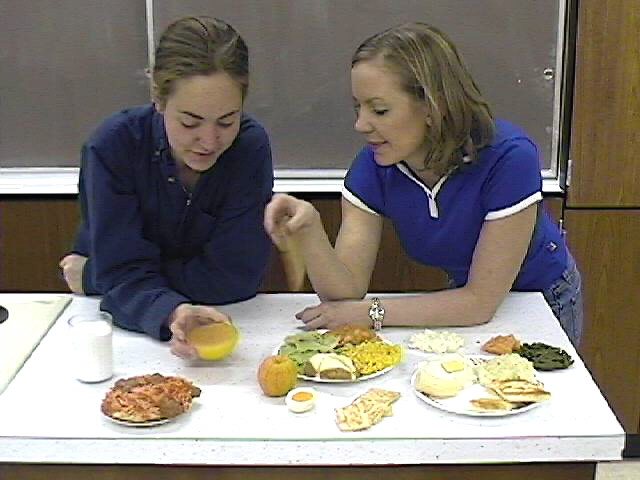

The mission of the Culinary Arts program is to provide
theoretical knowledge and hands-on experience for students interested in
becoming caterers, apprentice chefs, or managers.
Students will have the opportunity to do the following:
- Learn and effectively
practice skills in food preparation and service
- Understand culinary nutrition,
food safety and food identification
- Gain an appreciation for
foods of various cultures
- Acquire supervisory skills
and develop a personal sense of professionalism
- Necessary for
working success in the food service industry
- Gain experience in the
proper use and maintenance of professional food service equipment
|


|
|